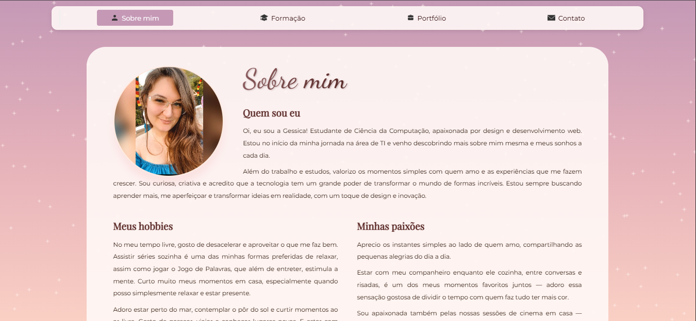
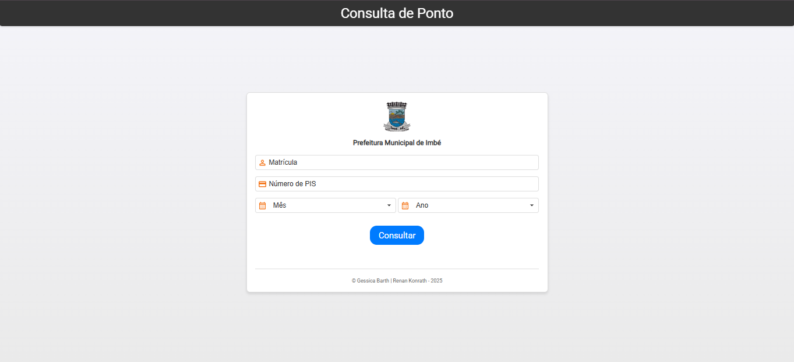

Bem-vindos ao meu Portfólio
Aqui estão alguns dos projetos que desenvolvi, tanto durante meus estudos quanto no trabalho. Eles representam minha evolução como desenvolvedora front-end.
💡 Projetos

Projeto Portfólio
Ver projeto

Projeto Consulta de Ponto
Ver projetoQuer ver mais projetos?
Você pode acessar meu portfólio completo com estudos, desafios e criações no Notion!
Acessar Notion